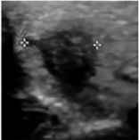

个人详细诊疗信息
| 个人信息 | 甲状腺超声影像 |
|---|---|
|
姓名 : 李**
ID : 100001
性别 ：男
年龄 : 21
主治医师 ：肖医生
过敏史 ：无
入院时间 ：2023-09-17
|
 |
|
主诉：
脖颈根部出现肿胀，经常出现呼吸困难、气短症状，
最近一次呼吸困难在上午十一时左右，休息半个小时后症状缓解，声音轻微嘶哑，吞咽正常，无甲状腺家族病史；近期有发烧症状。
|